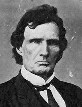

|

|

|
|
|
Lawyer, Congressman, and a leader of the Radical
Republicans, Thaddeus Stevens was born in Danville, Vermont
on April 4, 1792. Son of a shoemaker who deserted his family
in 1804, Stevens triumphed over the dual handicaps of
poverty and a deformed foot, graduating from Dartmouth
College in 1814. He immediately left New England for York,
Pennsylvania, where he trained in law. First in York, then
Gettysburg, and finally Lancaster, Stevens succeeded as a
lawyer and as an admired state legislator in the 1820s, 30s,
and 40s. Stevens' deserved reputation as an egalitarian
began when he set aside time from his prosperous law
practice to defend an increasing number of runaway slaves,
and to state on record his anti-slavery beliefs.
Stevens' political career in the Pennsylvania
legislature's fractious and sometimes-violent political
scene paralleled the upward climb of his legal firm. He
joined with the Whig and Republican political parties to
advance his mixed agenda of humanitarian reform and
capitalist economic development. Stevens virtually created
the free public education system in Pennsylvania, the crown
jewel of his legacy to that state. A wealthy man by the time
he was in his forties, he was an enthusiastic supporter of
favorable legislation for railroads and banks, and the owner
of a number of iron mills.
Stevens also had a dark side to his personality.
Sarcastic, witty, and possessing a boundless reservoir of
vindictiveness toward his perceived enemies, the lifelong
bachelor won the admiration but never the hearts of his
loyal Pennsylvanian constituency who sent him to Congress
from the 1850s until his death. Scandals dogged Stevens from
early on in his career: accusations of murder, womanizing,
gambling, and other immoral acts found their way into
unfriendly newspaper accounts. Many of these charges were
false, and Stevens usually ignored them or challenged them
in court. Stevens never refuted firmly the well-publicized
accusation that Lydia H. Smith, his long time
African-American housekeeper, was also his mistress.
Ultimately, Stevens' personal intrigues did not derail his
political career, and few lawmakers have had such an impact
on Congress as did Stevens during the 1860s.
By 1861, Stevens in the House and Charles Sumner in the
Senate were leaders in advancing would would come to be
called the "Radical Republican" agenda: abolish slavery,
secure constitutionally guaranteed rights for ex-slaves,
enroll black soldiers, and punish the Southerners harshly
for their rebellion. "Free every slave," Stevens cried,
"slay every traitor - burn every rebel mansion, if these
things be necessary to preserve this temple of freedom to
the world and to our posterity." For these sentiments, and
for his harsh reconstruction program that advanced the
theory that the seceded states were conquered provinces,
Stevens was singled out as the villain of Reconstruction by
several generations of Southerners and by more than a few
historians. In reality, Stevens was a practical politician
as well as an ideologue. He made many compromises to get
significant legislation such as the Fourteenth Amendment
passed by his more numerous moderate colleagues.
The "spark plug" of the Republican Party, Stevens pushed
and prodded Lincoln toward emancipation and by 1865, the two
men were working well together. It was a good thing that
they did so because Stevens occupied the chair of the
all-important Ways and Means Committee. From this position,
Stevens helped to finance the War. He supported strongly the
Republican economic program of high tariffs, paper money,
and railroad development. Because of his well-deserved
reputation as a fierce hater of slavery and slave owners,
(Stevens was known as "the scourge of the South")
Confederates took special pleasure in burning and destroying
his property when marching through the Pennsylvania
countryside on their way to Gettysburg in 1863.
With Lincoln's assassination, responsibility for managing
the transition to peace fell on his successor, Andrew
Johnson. Stevens and Johnson detested each other from the
start, and the years from 1865 to 1868 were the most
controversial of Stevens' very controversial career. The
struggle between Johnson and Stevens was over the question
of whether Congress or the Executive was going to control
the reconstruction of the South. Stevens was a central
figure in creating the famous Joint Committee on
Reconstruction, which dominated all Southern issues.
Johnson, a singularly inept politician, managed through his
blunders to give the Radical Republicans the momentum they
needed to impose military rule on the South, and to being
impeachment proceedings against him. Stevens helped to write
the articles of impeachment and was a powerful force behind
the House vote to destroy Johnson.
Stevens, a passionate believer in congressional
prerogative, pushed the envelope further when he
unsuccessfully argued for the passage of a comprehensive
land redistribution program. This example indicates that
even at the height of Stevens' legislative power he was
never the "dictator" of Congress, as has been charged.
Indeed the moderate majority made it important for Stevens
to compromise, and he did. In the end, however, Stevens did
not reshape the South in the Northern mold, as he wished.
Reflecting on his inability to impeach Johnson as well as to
secure African-American economic justice, the ailing
statesman declared, "My life is a failure." Stevens died in
Washington, D.C. on August 11, 1868. In accordance with his
will, he was buried in a black cemetery.
Source: Joan Waugh, ed., Facts on File Encyclopedia of American
History: Civil War and Reconstruction, 1856 to 1869 (New York: Facts on
File, 2003), 337-338.
|